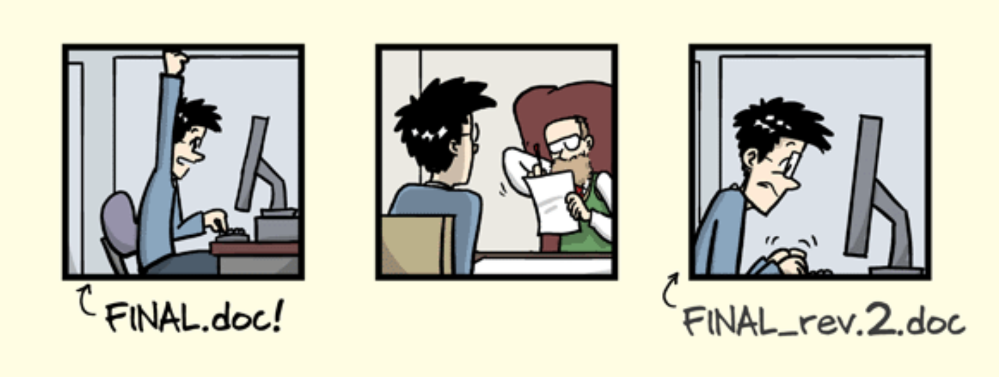
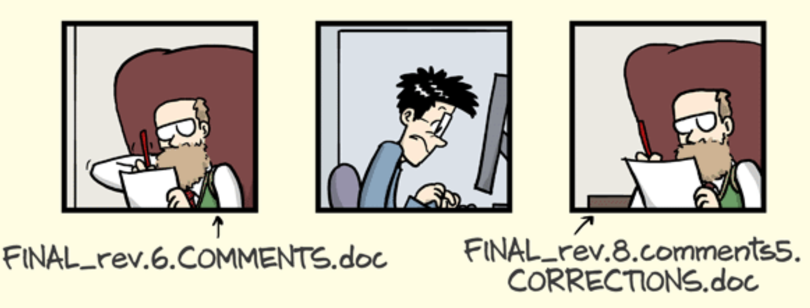
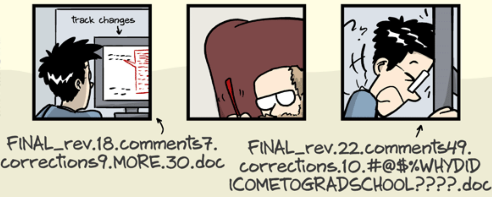
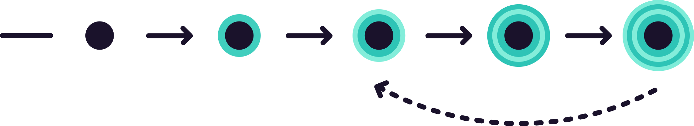
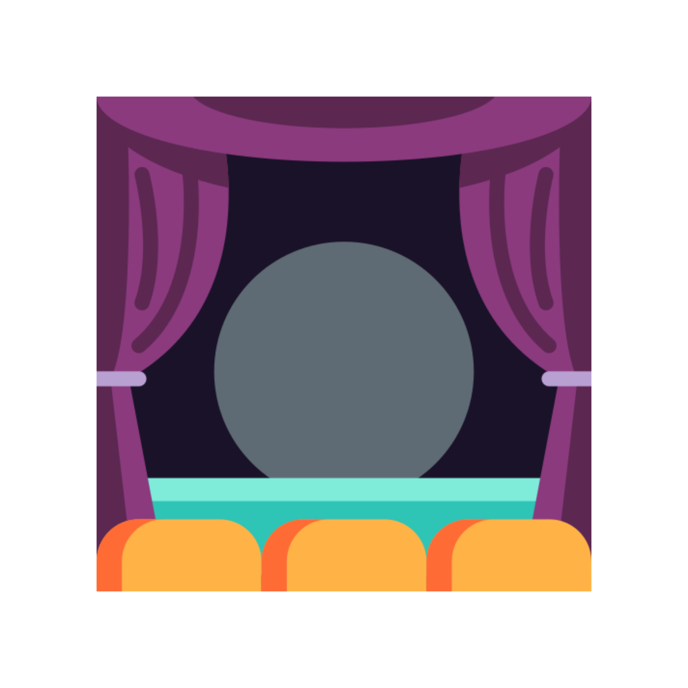
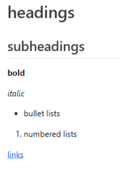

Local version control with Git
The problem with “final”



Enter: Version control

Version control is a systematic approach to record changes made in a file, or set of files, over time. This allows you and your collaborators to track the history, see what changed, and recall specific versions later when needed. — The Turing Way
Git is the industry-standard version control system — think of it like tracked changes in Word, but for your entire project, across (almost) every file type, with revision history, forever.
Git comes with its own list of tricky new terminology — it’s like another language!
Repository
A folder that Git watches, containing all the files to be tracked

Staging
The process of selecting which changes to include in the next snapshot
Commit
A snapshot of your project at a point in time
Repository structure
A repository (or repo) is just a normal folder with a hidden .git subfolder inside it — that’s where Git stores the full history of changes made to any files it is tracking. Often they look like:
my_project/
├── data/
│ ├── raw/ # original, untouched data — never modify!
│ └── processed/ # cleaned, transformed data
├── src/ # analysis scripts
│ ├── analysis.py
│ └── visualisation.py
├── notebooks/ # exploratory analyses
│ └── model_testing.ipynb
├── results/ # summaries and visualisations
│ └── report.csv
├── environment.yml # or renv.lock
├── .gitignore
└── README.mdREADME
Every repository should have a README which acts as the quick start guide for your project.
A README is written in markdown (.md), which is a(nother) language that adds style to plain text. It can create:
# headings
## subheadings
**bold** and *italic*
- bullet lists
1. numbered lists
[links](https://site.com)

A good README should cover:
- What this code does
- What dependencies are required
- How to install and run it
- What the inputs & outputs are

.gitignore
A .gitignore file allows us to list files and folders Git will not track. At minimum, you should never use Git to track:
❌ Raw data
❌ Results that can be generated from code.
❌ Non-binary files e.g. Microsoft Office files, proprietary data files, temporary or system files (e.g. .Rhistory, .DS_Store).
❌ Credentials and API keys
# Ignore all .csv files in the data directory
data/*.csv
# Ignore the entire results directory
results/*
# Ignore specific files
.DS_Store
.Rhistory
notebooks/draft_analysis.ipynb
credentials.txtCommits
Each time you want Git to take a snapshot of your project, you create a commit. A good commit has:
- A logical, focused set of changes — not everything all at once
- A short, meaningful message — what changed, and why?
❌ “Fix”
❌ “change colours”
✅ “Fix legend label overlap in volcano plot”
✅ “Change bar graph palette to improve contrast”
Bash workflow
Using the terminal, navigate to your project folder and initialise Git:
cd my_project
git initCheck what Git can see:
git statusStage files and make your first commit:
git add filename
git commit -m "Commit message here"git add . stages everything in the folder. You can use this, but set up your .gitignore first — otherwise you may commit files you didn’t mean to!
GUI workflow
- Open your project folder in VSCode
- Click the Source Control icon in the left sidebar (or
Ctrl+Shift+G) - Click Initialise Repository
- Your files appear with U (untracked) badges
- Hover a file and click + to stage it — badge changes to A
- Type a commit message in the box at the top
- Click Commit (✓)
- Open RStudio and go to File → New Project → Existing Directory
- Navigate to your project folder and click Create Project
- Go to Tools → Project Options → Git/SVN
- Change version control system to Git and click OK
- Restart RStudio when prompted — the Git tab appears top-right
- Your files appear with ? (untracked) badges
- Tick the checkbox next to files to stage them — badge changes to A
- Click Commit, write a message, click Commit
In Practice
Let’s return to our analysis of NASA’s spacewalk data.
2.1 Initialise a git repository within the analysis folder
2.2 Create a .gitignore — which files should you exclude?
2.3 Make your first commit with the original folder components
2.4 Write a README.md that describes the project, then commit your changes
Quick reference
| Initialise a repo |
git init
|
| Check status |
git status
|
| Stage changes |
git add filename or git add .
|
| Commit |
git commit -m “your message”
|
| View history |
git log –oneline
|
| Connect to GitHub |
git remote add origin <url>
|
| Push to GitHub |
git push
|
| Pull from GitHub |
git pull
|